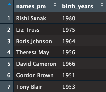

names_pm <- c("Rishi Sunak",
"Liz Truss",
"Boris Johnson",
"Theresa May",
"David Cameron",
"Gordon Brown",
"Tony Blair")2 Data in R
Last week we started with a gentle introduction to R. We created a basic dataset, with the names of UK Prime Ministers and their respective birthdays.
Let’s remember the steps. First, we created an object called pm_names. We did this by using the function c() which refers to combine.
The object pm_names hold the information we feed into: names of the Prime Ministers. Let’s check the object.
names_pm
#> [1] "Rishi Sunak" "Liz Truss" "Boris Johnson" "Theresa May"
#> [5] "David Cameron" "Gordon Brown" "Tony Blair"This is basically the names of last seven UK Prime Ministers. The number in square brackets refers to an item’s position. For example [1] in front of Rishi Sunak tells me that the first item in the object names_pm is Rishi Sunak. Similarly the fifth item in names_pm is David Cameron.
Let’s recall the square brackets notation [] which is used to get a specific item from an object.
# First item in names_pm is "Rishi Sunak"
names_pm[1]
#> [1] "Rishi Sunak"
# Fifth item in names_pm is "David Cameron"
names_pm[5]
#> [1] "David Cameron"
# First and fifth item in the names_pm
names_pm[c(1,5)]
#> [1] "Rishi Sunak" "David Cameron"Sometimes a series of information following each other is called a vector. The object names_pm is a vector because it contains a series of information in a sequence. More specifically, names_pm is a vector of names. We will revisit the term vector.
Last week, we also created another object called birth_years, storing the information of birth years of each Prime Minister in names_pm. Also recall that the order of year of birth is important. For example, first item in birth_years should be Rishi Sunak’s year of birth, second item should be Liz Truss’s, and so on.
birth_years <- c(1980, # Rishi Sunak
1975, # Liz Truss
1964, # Boris Johnson
1956, # Theresa May
1966, # David Cameron
1951, # Gordon Brown
1953 # Tony Blair)
)2.1 Class of an object
The object birth_years is a numerical vector. It contains numbers. Let’s check the object.
birth_years
#> [1] 1980 1975 1964 1956 1966 1951 1953R understand the differences between textual and numerical information. We can check the class of an object using the class() function.
# birth_years contain numerical information
class(birth_years)
#> [1] "numeric"
# names_pm contain textual information, which is called character in R
class(names_pm)
#> [1] "character"2.2 Length of an object
We typed names of last seven Prime Ministers and their respective birth years. The number of items in names_pm and birth_years should be both seven. We can see the number of items in a vector by the length() function.
# Number of items in a vector can be seen by length()
# Length of names_pm:
length(names_pm)
#> [1] 7
# Length of birth_years:
length(birth_years)
#> [1] 72.3 is equal to operator
You can ask R whether two things are equal to each other or not. To do so, we are going to use the == operator, which means is equal to.
# is equal to operator: ==
# is the length of names_pm equal to birth_years
length(names_pm) == length(birth_years)
#> [1] TRUE
# yes it is
# is the class of names_pm equal to birth_years
class(names_pm) == class(birth_years)
#> [1] FALSE
# no it is not
# because names_pm contain textual information and birth_years contain numerical information2.4 Creating a simple dataset
Last week we created a simple spreadsheet that looked like the data shown in Figure 2.1.

We can achieve this by doing a column bind which refers to vertically binding two vectors and can be done using the cbind() function.
my_data <- cbind(names_pm, birth_years)
my_data
#> names_pm birth_years
#> [1,] "Rishi Sunak" "1980"
#> [2,] "Liz Truss" "1975"
#> [3,] "Boris Johnson" "1964"
#> [4,] "Theresa May" "1956"
#> [5,] "David Cameron" "1966"
#> [6,] "Gordon Brown" "1951"
#> [7,] "Tony Blair" "1953"The first column in my_data is names_pm and the second column is birth_years. We have now two dimensions: columns and rows.
Recall that to ask R to bring a specific item in a two-dimensional object, such as a spreadsheet, we can use the square-brackets [] notation but we need to specify both dimension.
First dimension refers to rows and second dimension refers to columns. For example, to get the third row in second column:
# Third row in second column
my_data[3,2]
#> birth_years
#> "1964"To sum up, we bind two vectors by column. Each column is a vector. We can call these column vectors.
To get the first column, names_pm, we can use the square brackets notation.
# Bring the first column
my_data[,1]
#> [1] "Rishi Sunak" "Liz Truss" "Boris Johnson" "Theresa May"
#> [5] "David Cameron" "Gordon Brown" "Tony Blair"
# Bring the second column
my_data[,2]
#> [1] "1980" "1975" "1964" "1956" "1966" "1951" "1953"We left the first dimension, which designates the row, unspecified to tell R to bring everything. We could also use column names instead of column numbers.
# Bring the column birth_years
my_data[,"birth_years"]
#> [1] "1980" "1975" "1964" "1956" "1966" "1951" "1953"
# Bring the column names_pm
my_data[,"names_pm"]
#> [1] "Rishi Sunak" "Liz Truss" "Boris Johnson" "Theresa May"
#> [5] "David Cameron" "Gordon Brown" "Tony Blair"We can do the same for rows. To get a row vector, use the squared bracket notation.
# Bring the first row
my_data[1, ]
#> names_pm birth_years
#> "Rishi Sunak" "1980"
# Bring the third row
my_data[3,]
#> names_pm birth_years
#> "Boris Johnson" "1964"
# Bring the fourth row
my_data[4,]
#> names_pm birth_years
#> "Theresa May" "1956"R will give you an error message if you go out of bounds.
# Bring the third column
my_data[,3]
#> Error in my_data[, 3]: subscript out of bounds
# Bring the 10th row
my_data[10,]
#> Error in my_data[10, ]: subscript out of bounds
# Bring the second column, ninth row
my_data[9,2]
#> Error in my_data[9, 2]: subscript out of bounds2.5 Data frame
It is customary to keep a spreadsheet type of two-dimensional data as a data frame in R.
Let’s check the class of my_data.
# Class of my_data
class(my_data)
#> [1] "matrix" "array"It looks like the class of my_data is “matrix” and “array”. Matrix is a two-dimensional array.
We can turn my_data into a data frame.
# Turn my_data into data frame
my_data <- as.data.frame(my_data)
# this overwrote my_data as a data frame
# Check its class
class(my_data)
#> [1] "data.frame"In this module, we will primarily work with data frames.
Recall that we can use the $ notation when working with data frames.
# bring names_pm
my_data$names_pm
#> [1] "Rishi Sunak" "Liz Truss" "Boris Johnson" "Theresa May"
#> [5] "David Cameron" "Gordon Brown" "Tony Blair"
# bring birth_years
my_data$birth_years
#> [1] "1980" "1975" "1964" "1956" "1966" "1951" "1953"
# bring the third item in birth_years
my_data$birth_years[3]
#> [1] "1964"We can check the number of columns and the number of rows of our data frame by using ncol() and nrow() functions.
# number of columns
ncol(my_data)
#> [1] 2
# number of rows
nrow(my_data)
#> [1] 7
# dimension:
dim(my_data)
#> [1] 7 2
# we have two dimensions: rows and columns,
# first dimension has seven items.
# second dimension has two items.
# number of dimensions:
length(dim(my_data))
#> [1] 2Note that I put a function within a function when I put dim(my_data) into length().
# number of dimensions:
length(dim(my_data))
#> [1] 22.6 Variable, Row, Observation
Some more terminology that is frequently used in data analysis.
A column vector typically shows a variable. A row vector typically shows an observation. A particularly item, which is a cell in a spreadsheet, is a value. This is visualised in Figure 2.2.

# A variable: a column (e.g., birth_years)
my_data$birth_years
#> [1] "1980" "1975" "1964" "1956" "1966" "1951" "1953"
# An observation: a row (e.g., second row)
my_data[2,]
#> names_pm birth_years
#> 2 Liz Truss 1975
# A particular value (e.g., third row of second column)
my_data[3,2]
#> [1] "1964"